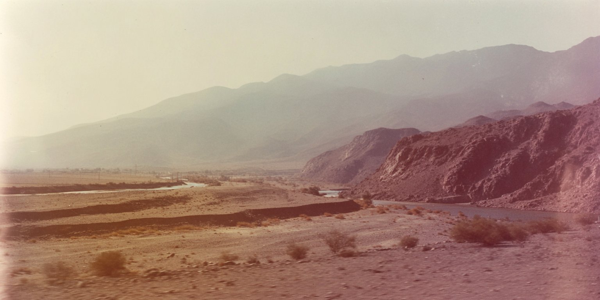
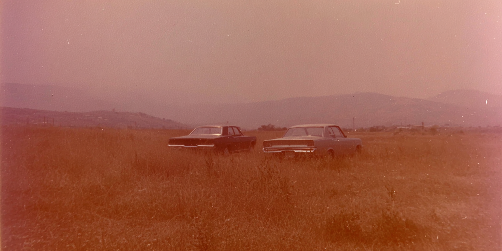
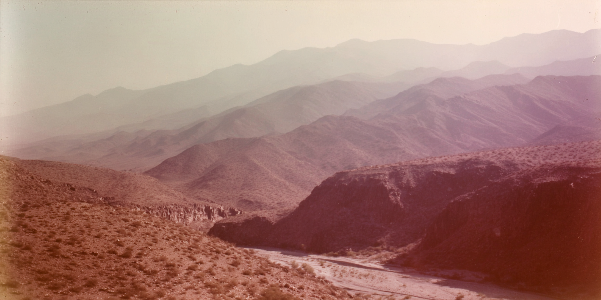

tree branch with elongated leaves and clusters of pink flowers against a bright sky.
Layered mountain ridges stretch into the distance above a winding dry river channel in a vast desert valley.
Hazy open grassland with a single elevated haystack on wooden stilts, distant hills, muted sepia tones, soft film grain, vintage analog photo.
desert close up of ground in Iran hills, faded analog photograph, sun-bleached colors, subtle dusty pink and muted ochre tones, soft film grain, overexposed sky swallowing detail, heat shimmer distortion, empty space dominating frame, melancholic stillness, edges dissolving into white, subtle light leaks, sense of isolation and time passing, , imperfect composition, 35mm kodachrome
dappled sunlight flickering across tarmac, soft focus as if seen through half-closed eyes, subtle motion blur, 1970s analog photograph, faded print texture, slight color shift toward warm, skew alignment, hand held feel. dust and grain on film time suspended, nostalgic and tender, imperfect 35mm film
fragmented memory of walking down a tree-lined road, golden sepia tones, branches arching overhead like a tunnel, dappled sunlight flickering across pavement, soft focus as if seen through half-closed eyes, analog photograph